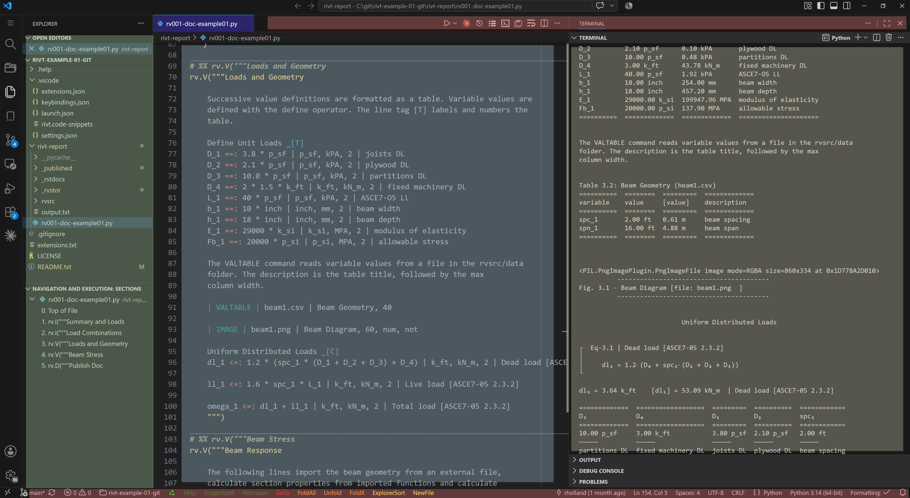

A.1 | Start#
[1] Getting Started#
This section covers installation of rivt and rivt doc examples. They are source software so you are free to download and modify the program as needed (see FAQ). The open source software installation process is designed to gather and install multiple open source components from various sources. This section covers three ways to run rivt.
For most Windows users the best way to get started is to download the portable file rivt-code.zip (~800 MB zipped, ~2.2 GB expanded). For further details see rivt-code.
For users with a GitHub account or limitations on running local software, the best way to get started is to fork and run rivt-codespace in a browser.
For users familiar with Python, rivt may be installed at the system level or in an isolated environment using uv. Further details are here.
rivt may be edited in a simple text processor and run from the command line but efficient editing and compiling is typically done in an IDE. Any IDE may be used but VSCode with extensions is supported and documented. A typical VSCode IDE layout for editing a rivt file is shown below.
{kind=link}

rivt files and docs in VSCode (click on image to enlarge)#
Note
The rivt file is in the center editing panel[blue], the text doc output is in the right panel[brown] and the file explorer is the far left panel [green]. Extension buttoms are located on the top and bottom status bars [red]. Text, PDF and HTML output files are accessed in the file explorer and displayed within panels. Individual rivt sections are linked in the navigation panel and in the text output for quick naviagation through the file. Panel locations may be customized by the user. An example rivt file and doc are here.
[2] rivt-code#
A rivt-code installation is recommended for Windows users interested in trying rivt rivt-code is a zip file that includes rivt, Python, VSCode and an example rivt file. The zipped file size is ~800 MB which unzips to about 2.2 GB. It may be downloaded from the rivt-code repository.
The zip file naming convention is:
rivt-code-monthx.year.zip
where x is an a-z character representing mid month releases.
The tag name follows the major, minor and patch release number convention.
v<major>.<minor>.<patch>[an]
The zip file contents must be unzipped into a directory with read-write access - typically the users home folder or a flash drive. After unzipping, click the rivt-code shortcut to open the example rivt file in a rivt VSCode environment. Click on the triangle in the upper right of the editor to run the file and output text, pdf or html docs, depending on the | PUBLISH | setting. See the rivt user manual for details.
Features of rivt-code include:
simplified, isolated installation
package and framework integration
installation generally needs to be updated as a whole, not the individual components.
integration with other programs may be more difficult.
rivt-code includes preinstalled VSCode extensions designed to simplify editing navigation and running rivt files. They are listed in vscode settings and may explored and modified in the VSCode interface.
[3] rivt-codespace#
VSCode is a customizable code editor that can be run locally or in the cloud. The cloud version of VSCode is referred to as a Codespace . A rivt Codespace is a VSCode cloud environment with rivt extensions for editing and running rivt files.
Codespaces are run in a personal GitHub account. When rivt-codespace is forked into a personal account and run, an example rivt file is loaded. The example file may be run and edited in the Codespace and the rivt interface extensions may be explored.
The first time a rivt-codespace is run, it may take a few minutes to load and initialize the environment. After it is set up, it will load in a few seconds. The same delays apply to running a rivt file. The first time will be a minute or two to compile the Python files. Subsequent runs will be a few seconds. The rivt-codespace environment is persistent and will save any changes made to the example files.
Steps for running rivt-codespace are provided in the README here.

[4] rivt-system#
rivt may be installed into a system level Python.
A list of the installed dependencies is here.
rivt may also be installed and isolated environment using the uv package manager. The primary advantage of uv is the simplicity of insalling and updating packages while keeping them isolated from the system Python.
rivt-uv installation is recommended for users with some familiarity with Python and programming.